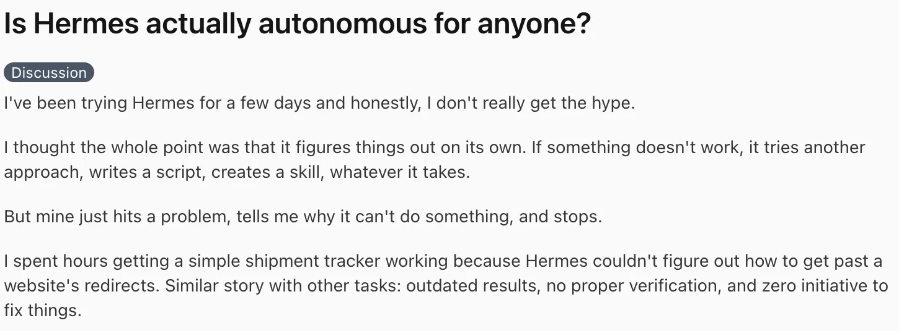

AI Agent Architecture

In 2022 OpenAI made headlines with their ChatGPT-3.5 LLM due to its impressive “chat" and response capabilities. After 10 to 15 minutes of experimenting, users realized the experience was limited to the knowledge the model was trained on (Parametric Memory), and early-day best practices to "prompt engineer" efficient Chain-of-Thought reasoning.
In 2024 Anthropic introduced the Model Context Protocol (MCP) standard. This is the protocol that expands the capability of LLMs to their dynamic implementations today. While users ran into outdated Parametric Memory limitations with ChatGPT-3.5, they run into configuration (understanding) issues with Ai-Agents.
In the following sections, I will simplify the various components that make up an ai-agent. By the end, you will understand why the initial use of ai-agents is so underwhelming, and how to setup your own agents to perform professional and personal tasks.
Hermes Agent Architecture